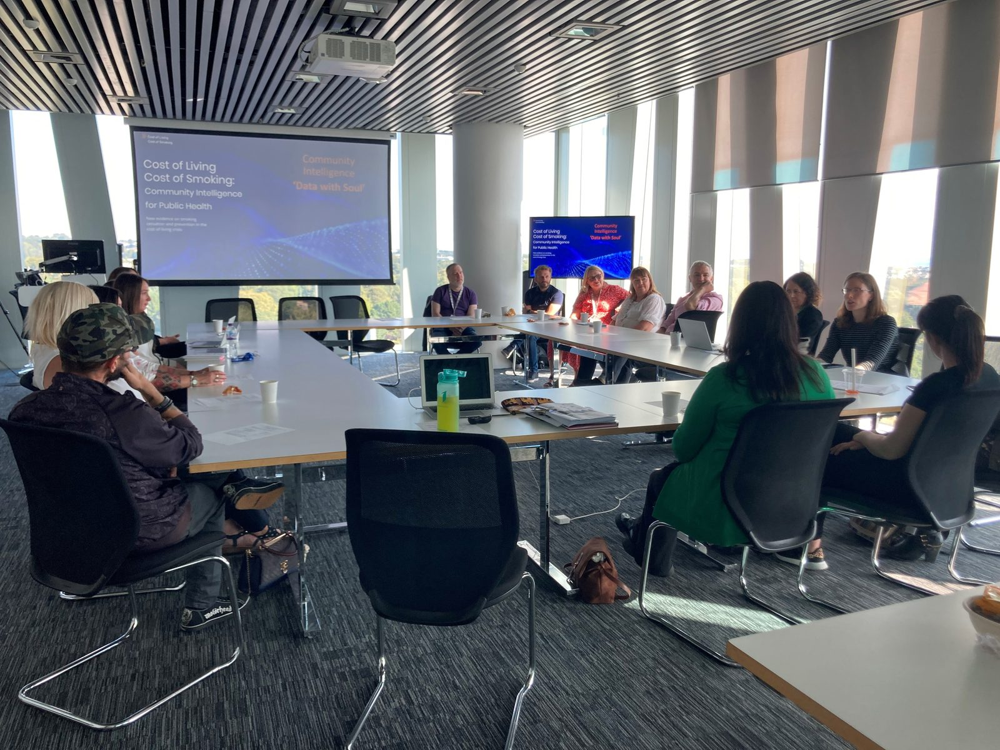

News
Copy still to comeThe news entries from the live site have not been carried across. Paste them (date, headline, a sentence or two) and they will be set as a dated list. Event photographs from the Wix export are already in
assets/img/site/ — Aberdeen, Liverpool, Dundee and the November 2023 partnership meeting.